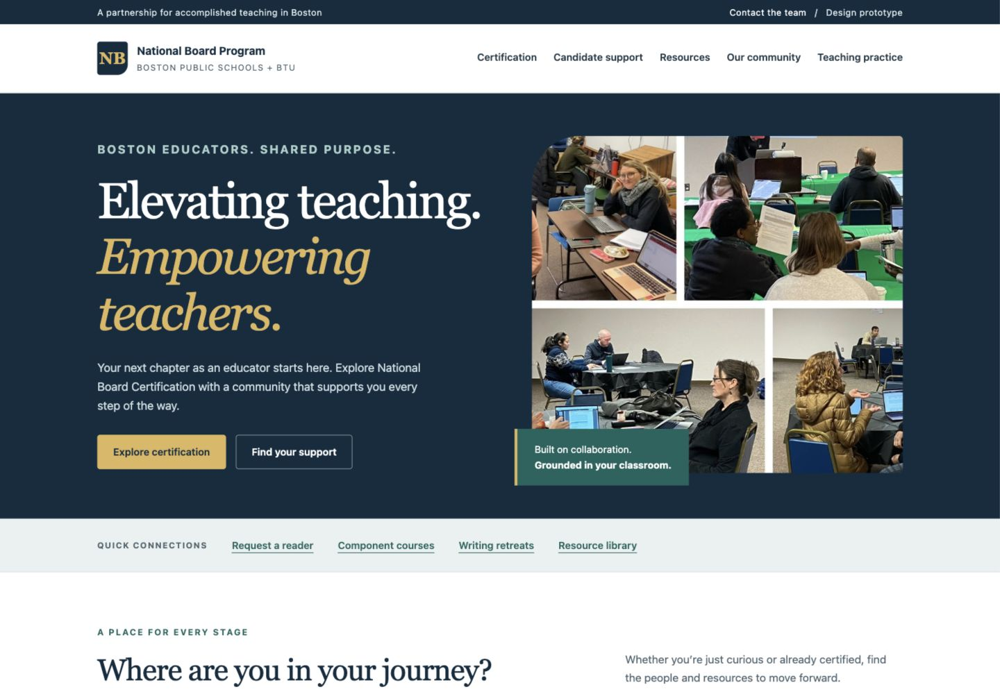

Prototype 1
Clear & connected
A calm, professional direction with structured layouts, intuitive navigation, and a navy, teal, and gold palette. Designed to make the next step easy to find.
- Clean & structured
- Resource focused
- Approachable